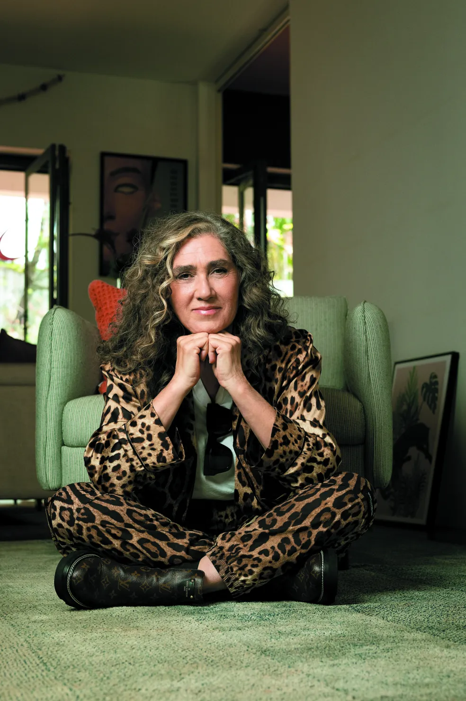
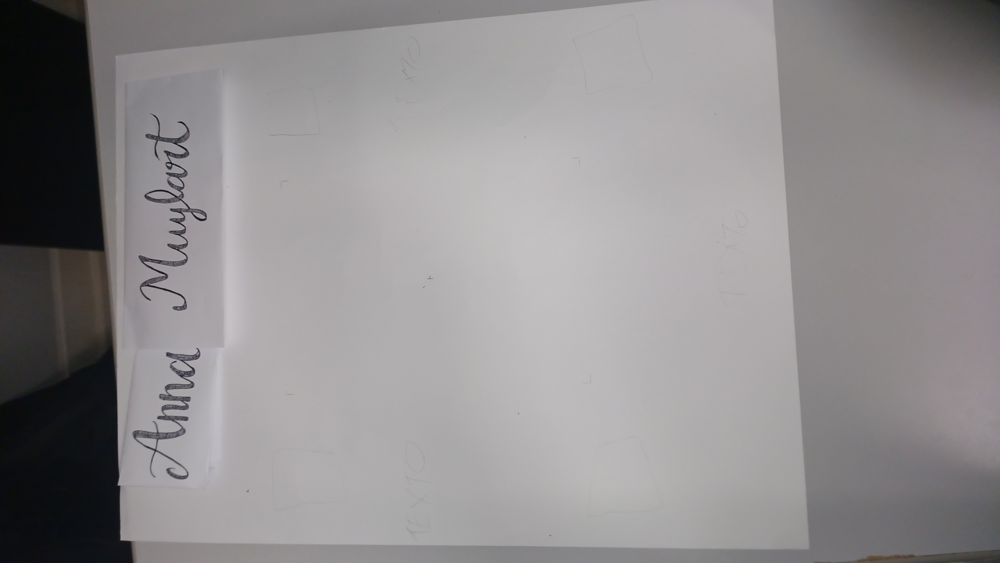

Cartaz Anna Muylaert

Fonte: Marcus Steinmeyer
Contextualização
Durante o mês de março realizamos uma atividade relacionada ao dia das mulheres criando um cartaz sobre uma artista brasileira.
Apresentação - Mulheres na Arte
Ao decorrer de toda a história, muitas mulheres artista foram invisibilizadas devido a vários fatores. Por isso, fizemos, em parceria com outras turmas, cartazes com o intuito de trazer visibilidade para a arte dessas mulheres.
Processo
Escolhemos falar sobre Anna Muylaert, uma diretora e cineasta brasileira conhecida por obras como “Que horas ela volta?” e “Castelo Rá- Tim-Bum, o Filme”.



Fontes: Luisa Blankenburg e Nicolas Teixeira
A Produção
Após a impressão das fotos utilizadas e a montagem completa do cartaz, a produção final se encontra em seguida na 3° imagem.